Cắt Phổi
Nguồn: Xray.vn — xray.vn/cat-phoi
I. Đại cương
– Cắt phổi (pneumonectomy) là phẫu thuật cắt bỏ toàn bộ một bên phổi:
+ Ở ung thư phổi không tế bào nhỏ, có thể cân nhắc khi không thể đạt diện cắt âm tính bằng phẫu thuật bảo tồn hơn và người bệnh đủ dự trữ tim phổi. Với bệnh lành tính như lao phổi phá hủy hoặc giãn phế quản lan tỏa một bên, chỉ cân nhắc ở trường hợp được tuyển chọn, khi bệnh nặng và không kiểm soát được bằng điều trị bảo tồn.
+ Cắt phổi làm giảm dự trữ thông khí và giường mạch phổi; áp lực động mạch phổi và gánh thất phải có thể tăng. Cần đánh giá chức năng hô hấp và tim mạch trước mổ, gồm chức năng phổi dự đoán sau mổ và khả năng gắng sức khi phù hợp.
+ Cạm bẫy: Bệnh phổi tắc nghẽn mạn tính đơn thuần không phải chỉ định cắt phổi thường quy; phẫu thuật giảm thể tích phổi là một thủ thuật khác. Cắt phổi do chấn thương rất hiếm, chỉ cân nhắc như biện pháp cứu mạng khi tổn thương rốn phổi không thể kiểm soát bằng cách bảo tồn.
+ Dự trữ tim phổi không đủ để chịu đựng phẫu thuật là yếu tố loại trừ quan trọng; tăng áp phổi nặng làm tăng nguy cơ phẫu thuật. Với mục tiêu điều trị triệt căn ung thư, cần đánh giá giai đoạn bệnh và khả năng phẫu thuật theo hội chẩn đa chuyên khoa.

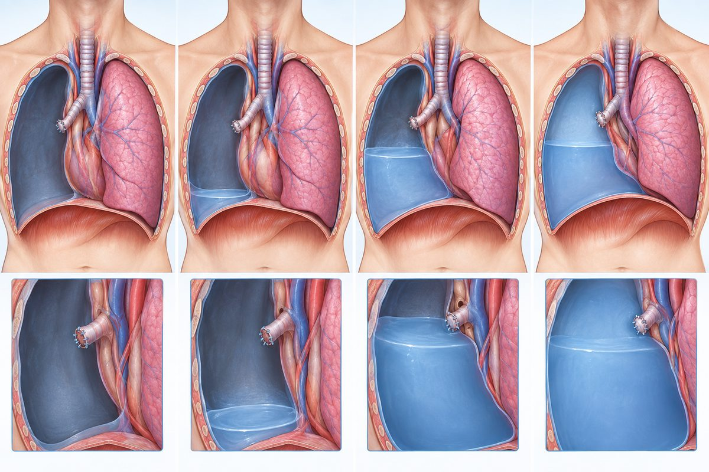
– Hai phẫu thuật thường được phân biệt là cắt phổi chuẩn và cắt phổi ngoài màng phổi:
+ Cắt phổi chuẩn (standard pneumonectomy) lấy bỏ toàn bộ phổi bên bệnh. Trong phẫu thuật ung thư, thường kèm đánh giá và nạo hạch rốn phổi, trung thất theo chỉ định. Chỉ lựa chọn khi cần cắt toàn bộ phổi để đạt diện cắt âm tính và không thể thực hiện phẫu thuật bảo tồn hơn.
+ Cắt phổi ngoài màng phổi (extrapleural pneumonectomy, EPP) lấy bỏ phổi bên bệnh cùng màng phổi, một phần cơ hoành và màng ngoài tim; các cấu trúc đã cắt cần được tái tạo. Phẫu thuật này chỉ được cân nhắc ở người bệnh được tuyển chọn kỹ, thường trong bối cảnh u trung biểu mô màng phổi ác tính tại trung tâm chuyên sâu; không phải lựa chọn thường quy cho ung thư phổi tiến triển tại chỗ.
+ Cắt thùy, cắt phân thùy và cắt hình chêm là các phẫu thuật bảo tồn nhu mô. Lựa chọn phụ thuộc vào vị trí và phạm vi u, giai đoạn, mô học, khả năng đạt diện cắt âm tính và dự trữ tim phổi.
+ Cạm bẫy: Mức độ xâm lấn tại chỗ trên hình ảnh không tự nó xác định loại phẫu thuật; cần đánh giá tổng hợp giai đoạn bệnh, khả năng cắt bỏ triệt căn và dự trữ tim phổi.


© Chẩn Đoán Hình Ảnh Xray.vn
II. Chẩn đoán x-quang
– Đặc điểm hình ảnh: Trong những giờ đầu sau mổ, khoang sau cắt phổi (postpneumonectomy space) thường chủ yếu chứa khí, có thể có ít dịch:
+ Trung thất thường gần đường giữa lúc đầu, sau đó lệch dần về bên mổ khi khoang lấp dịch và thể tích lồng ngực giảm.
+ Vòm hoành bên mổ nâng cao, khoang liên sườn hẹp dần trong quá trình co kéo hậu phẫu; không mặc định quy những biến đổi này cho liệt cơ hoành.
+ Dịch tích tụ dần, tạo mức khí–dịch (air–fluid level). Tốc độ thường được ước lượng khoảng 2 khoang liên sườn mỗi ngày nhưng biến thiên đáng kể; mức dịch có thể lên đến nửa hoặc hai phần ba khoang trong 4–7 ngày, và khoang có thể đầy hoàn toàn sau vài tuần đến vài tháng. So sánh phim nối tiếp quan trọng hơn áp dụng một mốc thời gian cố định.
– Cạm bẫy: Cần phân biệt diễn tiến lấp dịch sinh lý với rò phế quản–màng phổi hoặc nhiễm trùng khoang sau mổ:
+ Không tăng mức dịch, mức dịch hạ đột ngột hoặc khí xuất hiện trở lại sau khi khoang đã gần đầy dịch, nhất là khi kèm lệch trung thất sang bên đối diện, gợi ý rò phế quản–màng phổi nhưng không đặc hiệu. Hiếm khi mức dịch giảm mà không có rò; cần đối chiếu triệu chứng và phim nối tiếp, đồng thời cân nhắc MDCT ngực và nội soi phế quản khi nghi ngờ.
+ Tích dịch nhanh kèm sốt, đau ngực hoặc dấu hiệu nhiễm trùng cần nghĩ đến viêm mủ màng phổi; tốc độ lấp dịch đơn thuần không đủ để xác định biến chứng.

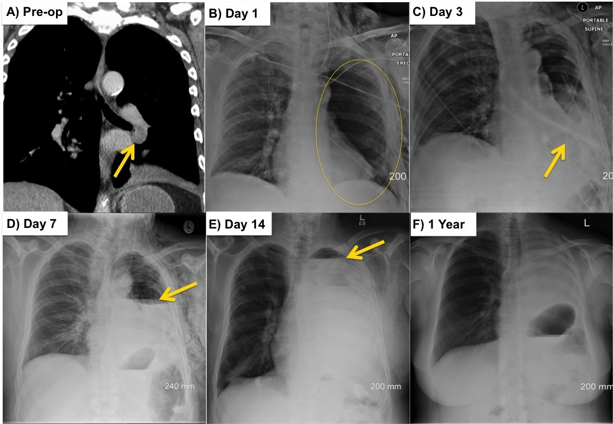

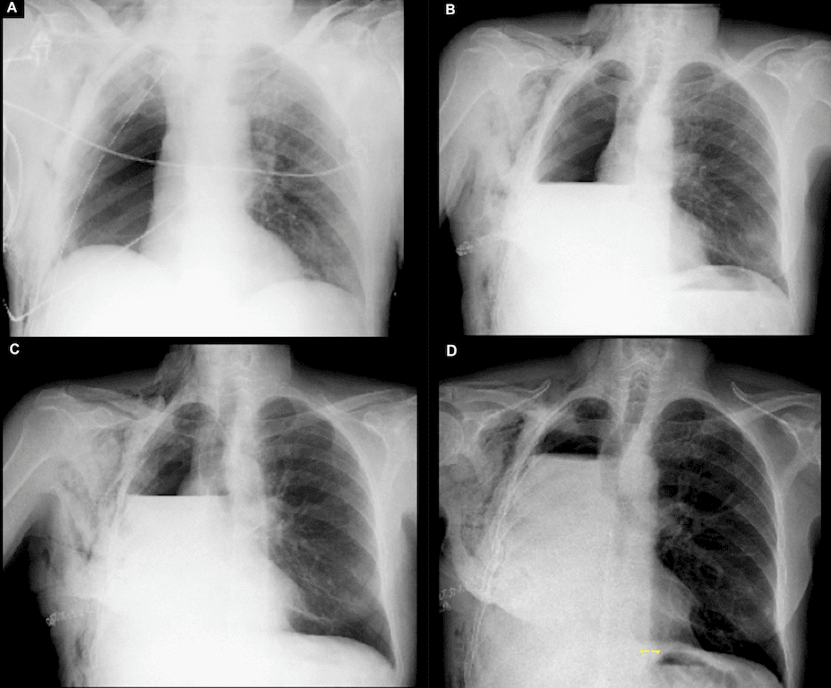

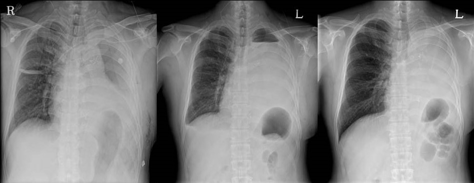

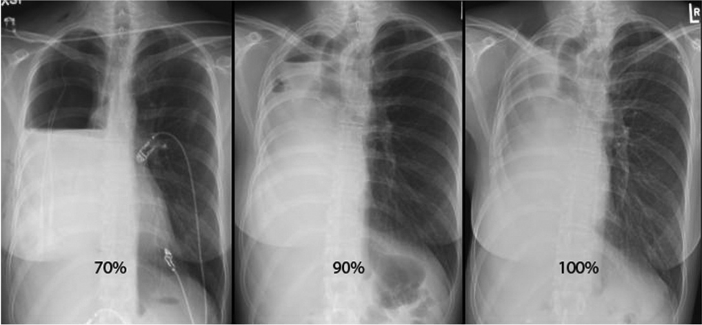

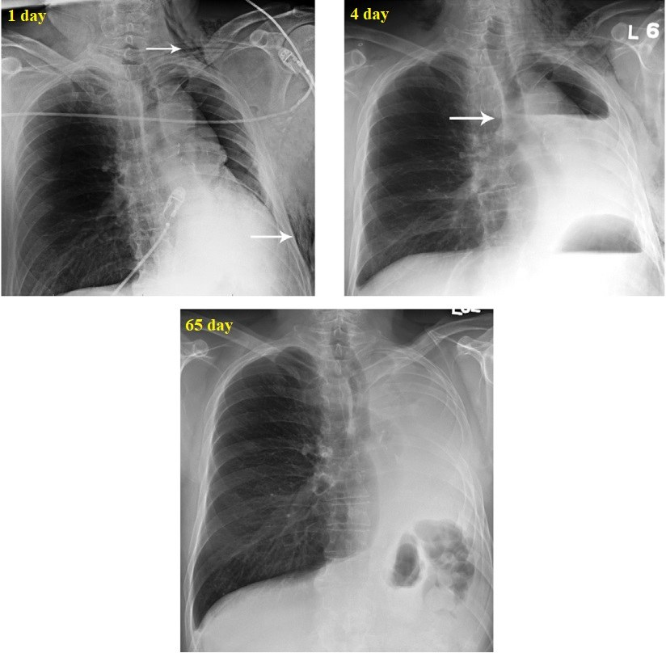

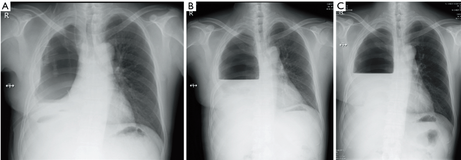

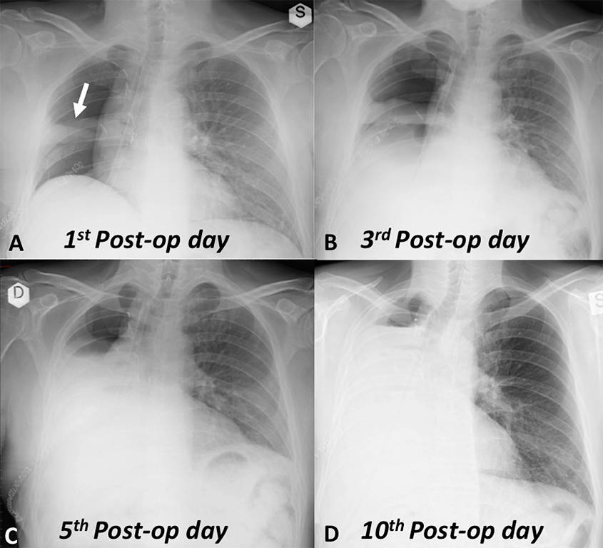

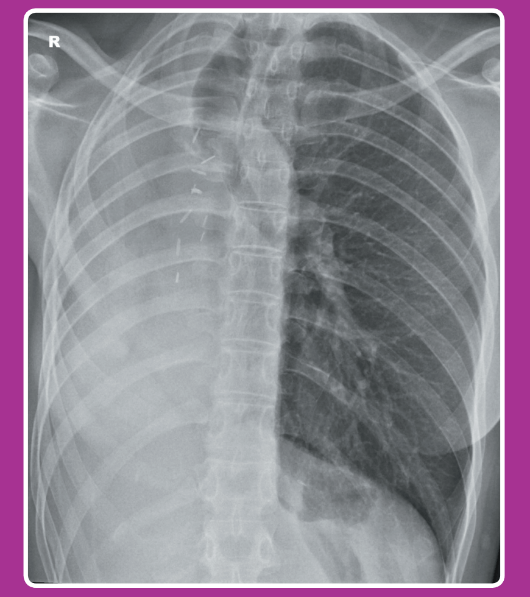

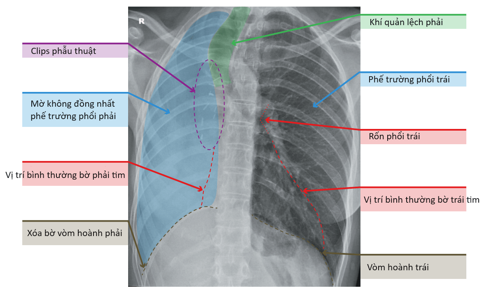
=> Case lâm sàng 1:


– Phân biệt khoang sau cắt phổi (postpneumonectomy space) với tràn dịch màng phổi (pleural effusion):
+ Khoang sau cắt phổi thường có khí lúc đầu; dịch tích tụ dần, làm mức khí–dịch dâng lên trên các phim nối tiếp. Tràn dịch màng phổi đơn thuần thường không có khí, trừ khi kèm tràn khí, rò phế quản–màng phổi, nhiễm trùng hoặc đã can thiệp.
+ Sau cắt phổi, trung thất thường lệch dần về bên mổ do mất thể tích; tràn dịch lượng lớn, tự do thường đẩy trung thất sang bên đối diện. Mức độ lệch còn tùy thời điểm chụp và lượng dịch; dịch ít hoặc khu trú có thể không làm lệch trung thất.
+ Clip phẫu thuật vùng rốn phổi, sẹo mở ngực và biến dạng thành ngực gợi ý tiền sử phẫu thuật nhưng không đặc hiệu; đối chiếu phim cũ và hồ sơ mổ khi cần.
+ Dẫn lưu màng phổi còn lưu và tràn khí dưới da gợi ý can thiệp gần đây nhưng không chứng minh khoang đang lấp dịch sinh lý; cần đánh giá theo bối cảnh và các dấu hiệu biến chứng.
+ Phổi đối bên có thể giãn bù và vượt qua đường giữa. Khi nghi thoát vị phổi, sự liên tục của nhu mô cùng phế quản và mạch máu trên MDCT giúp phân biệt với dịch màng phổi; không xem thoát vị phổi là biến đổi sinh lý mặc định.


III. Biến chứng

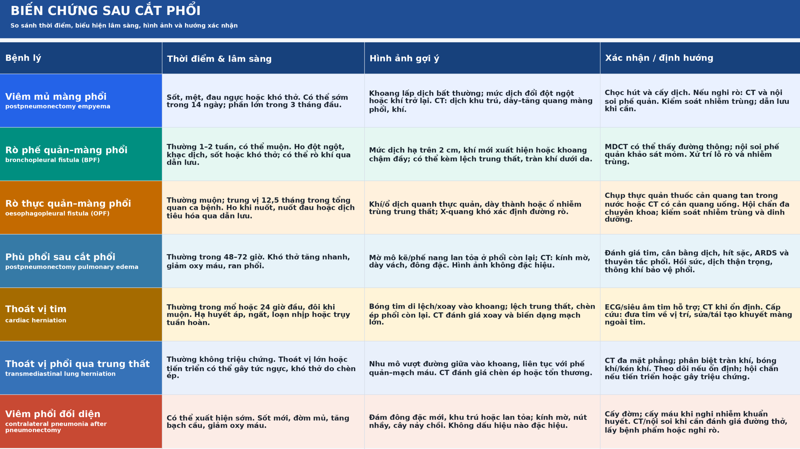
* Viêm mủ màng phổi
– Viêm mủ màng phổi sau cắt phổi (postpneumonectomy empyema) là nhiễm trùng khoang sau cắt phổi, có thể xuất hiện sớm hoặc muộn:
+ Người bệnh thường có sốt, mệt, đau ngực hoặc khó thở. Viêm mủ sớm có thể xuất hiện trong 14 ngày đầu; phần lớn trường hợp xảy ra trong 3 tháng đầu, nhưng biến chứng muộn vẫn có thể gặp.
+ Dịch trong khoang sau cắt phổi có thể bị nhiễm khuẩn; rò phế quản–màng phổi tạo đường thông với đường thở, làm tăng nguy cơ nhiễm trùng và ảnh hưởng tiên lượng. Khi có rò, người bệnh có thể khạc đờm mủ hoặc dịch từ khoang mổ.
– Đặc điểm hình ảnh:
+ X-quang ngực nối tiếp có thể thấy khoang không lấp dịch theo diễn tiến dự kiến, mức dịch thay đổi đột ngột hoặc khí xuất hiện trở lại sau khi khoang đã gần đầy dịch. Các dấu hiệu này gợi ý rò phế quản–màng phổi, nhưng không đặc hiệu cho viêm mủ.
+ MDCT ngực có tiêm thuốc cản quang giúp đánh giá dịch khu trú hoặc nhiều ngăn, dày và tăng quang màng phổi, khí trong khoang và mức độ lan rộng nhiễm trùng; các dấu hiệu hình ảnh cần được đối chiếu với lâm sàng.
+ Chọc hút dịch khoang sau cắt phổi để xét nghiệm vi sinh giúp xác nhận nhiễm trùng. Khi nghi có rò, nội soi phế quản có thể giúp khảo sát mỏm phế quản và định vị lỗ rò.
– Cạm bẫy:
+ Khí trong khoang ngay sau mổ có thể là bình thường; khí mới xuất hiện sau khi khoang đã gần đầy dịch hoặc mức dịch hạ đột ngột cần làm nghĩ đến rò, nhất là khi kèm sốt, khó thở hoặc lệch trung thất sang bên đối diện.
+ Không mặc định viêm mủ màng phổi sẽ vỡ vào phế quản chính. Nếu có rò, dịch mủ có thể tràn vào phổi còn lại, gây viêm phổi hít và suy hô hấp; tình trạng nhiễm trùng cũng có thể tiến triển thành nhiễm khuẩn huyết.
+ Rò xuất hiện sớm có thể liên quan đến thất bại liền mỏm phế quản, thiếu máu nuôi hoặc nhiễm trùng; không quy mặc định cho lỗi kỹ thuật khâu.
– Điều trị:
+ Kiểm soát nhiễm trùng bằng kháng sinh kinh nghiệm phù hợp bối cảnh, sau đó điều chỉnh theo kết quả vi sinh và kháng sinh đồ; phối hợp dẫn lưu khoang và hồi sức khi cần.
+ Nếu có rò, cần xử lý đồng thời nhiễm trùng và lỗ rò. Tùy thời điểm, tình trạng người bệnh và đặc điểm lỗ rò, ngoại lồng ngực có thể cân nhắc dẫn lưu kín, mở cửa sổ màng phổi hoặc phẫu thuật nhiều thì, bao gồm gia cố mỏm phế quản bằng mô có cuống.
+ X-quang ngực nối tiếp và MDCT được dùng khi cần để đánh giá khoang, dẫn lưu và nhiễm trùng tồn lưu; quyết định rửa khoang hoặc can thiệp tiếp theo dựa trên diễn tiến lâm sàng và đánh giá của nhóm ngoại lồng ngực.


=> Case lâm sàng 1:


* Rò phế quản – màng phổi
– Rò phế quản–màng phổi (bronchopleural fistula, BPF) là thông thương giữa phế quản, thường tại mỏm phế quản, với khoang màng phổi hoặc khoang sau cắt phổi:
+ Thường xuất hiện trong 1–2 tuần đầu sau mổ nhưng có thể xảy ra muộn hơn. Cơ chế thường liên quan đến bục hoặc hoại tử mỏm phế quản do thiếu máu nuôi, nhiễm trùng hay thất bại liền; nguy cơ cao hơn sau cắt phổi phải và hóa-xạ trị trước mổ.
+ Biểu hiện có thể gồm ho đột ngột, khạc dịch thanh dịch hoặc mủ, sốt, đau ngực, khó thở, giảm oxy máu hoặc rò khí liên tục qua dẫn lưu. Các triệu chứng này gợi ý nhưng không đặc hiệu cho rò.
– Đặc điểm hình ảnh:
+ Trên X-quang ngực nối tiếp, khoang sau cắt phổi không lấp dịch theo diễn tiến dự kiến, mức dịch hạ xuống trên 2 cm hoặc khí xuất hiện trở lại sau khi khoang đã gần đầy dịch gợi ý rò. Khí trong khoang ở giai đoạn sớm sau mổ có thể là bình thường; hiếm khi mức dịch giảm mà không có rò.
+ Lệch trung thất sang bên đối diện, tràn khí trung thất, tràn khí dưới da tiến triển hoặc rò khí liên tục qua dẫn lưu có thể đi kèm, nhất là khi có rò khí đáng kể; các dấu hiệu này không xác định riêng kích thước lỗ rò.
+ MDCT ngực lát mỏng có thể thấy đường thông và giúp đánh giá khoang sau cắt phổi, nhiễm trùng và phổi còn lại, nhưng không phải lúc nào cũng thấy trực tiếp lỗ rò. Nội soi phế quản giúp khảo sát mỏm phế quản và định vị lỗ rò; hai phương tiện bổ trợ nhau khi lập kế hoạch xử trí.
+ Rò lớn có thể làm dịch hoặc mủ tràn vào phổi còn lại, gây viêm phổi hít và suy hô hấp.


=> Case lâm sàng 1:


* Rò thực quản – màng phổi
– Rò thực quản–màng phổi (oesophagopleural fistula, OPF) là thông thương giữa thực quản và khoang màng phổi hoặc khoang sau cắt phổi; biến chứng này có thể gây nhiễm trùng khoang, viêm trung thất và nhiễm khuẩn huyết:
+ Đây là biến chứng rất hiếm, tỷ lệ được báo cáo tới 1%. Trong tổng quan các ca bệnh, thời gian trung vị từ cắt phổi đến chẩn đoán là 12,5 tháng; bệnh có thể xuất hiện sau nhiều năm.
+ Các nguyên nhân được ghi nhận gồm tổn thương thực quản trong mổ, nhiễm trùng mạn hoặc áp xe quanh phế quản, bệnh lý thực quản và hoại tử thiếu máu. Ca bệnh công bố thường xảy ra sau cắt phổi phải, nhưng dữ liệu ít chưa xác lập đây là yếu tố nguy cơ độc lập.
+ Sốt, đau ngực, nuốt khó hoặc đau khi nuốt, ho khi ăn uống và dịch tiêu hóa hoặc thức ăn qua dẫn lưu màng phổi gợi ý rò; không xem riêng một triệu chứng là dấu hiệu đặc hiệu.
– Đặc điểm hình ảnh:
+ X-quang ngực có thể thấy khí-dịch mới hoặc ổ dịch trong khoang sau cắt phổi, nhưng khó xác định đường thông và không phân biệt tin cậy với rò phế quản–màng phổi.
+ MDCT ngực có thể phát hiện đường rò, khí hoặc ổ dịch quanh thực quản, dày thành thực quản và ổ nhiễm trùng trung thất; thuốc cản quang uống có thể giúp làm rõ đường thoát thuốc, nhưng CT không phải lúc nào cũng thấy trực tiếp lỗ rò.
+ Chụp thực quản với thuốc cản quang tan trong nước dưới màn huỳnh quang giúp phát hiện thuốc thoát vào khoang màng phổi và xác định vị trí rò. Nội soi thực quản–dạ dày có thể hỗ trợ đánh giá và lập kế hoạch can thiệp.
– Phân biệt:
+ Rò phế quản–màng phổi (bronchopleural fistula, BPF) thường gợi ý bởi rò khí liên tục qua dẫn lưu, khí xuất hiện trở lại hoặc mức dịch hạ trong khoang sau cắt phổi; nội soi phế quản giúp khảo sát mỏm phế quản.
+ Rò thực quản–màng phổi thường gợi ý bởi ho khi nuốt hoặc dịch tiêu hóa qua dẫn lưu; chụp thực quản có thuốc cản quang tan trong nước hoặc MDCT có thuốc cản quang uống giúp xác định đường thông. Hai loại rò có thể đồng thời hiện diện.
– Điều trị:
+ Xử trí ban đầu thường gồm tạm ngừng ăn uống qua đường miệng, kiểm soát nhiễm trùng và dẫn lưu ổ nhiễm khi cần; kháng sinh được điều chỉnh theo kết quả vi sinh và kháng sinh đồ.
+ Cần bảo đảm dinh dưỡng, có thể dùng đường nuôi ăn đi vòng qua lỗ rò hoặc dinh dưỡng ngoài đường tiêu hóa tùy tình trạng. Đóng rò qua nội soi hoặc phẫu thuật được cân nhắc theo vị trí, kích thước, tình trạng nhiễm trùng và thể trạng người bệnh.
+ Hội chẩn đa chuyên khoa giữa ngoại lồng ngực và ngoại thực quản–dạ dày để lựa chọn xử trí; không mặc định mọi trường hợp đều cần mở thông hỗng tràng hoặc phẫu thuật đóng rò ngay.

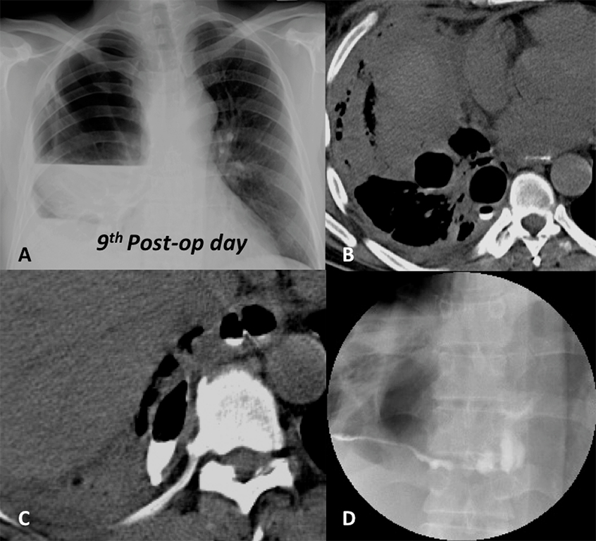
=> Case lâm sàng 1:


* Phù phổi
– Phù phổi sau cắt phổi (postpneumonectomy pulmonary edema, PPE) là biến chứng nặng, thường xuất hiện trong 48–72 giờ đầu nhưng có thể muộn hơn:
+ Các tổng quan ghi nhận tỷ lệ khoảng 4–7% và tỷ lệ tử vong được báo cáo tới 64%; các ước tính thay đổi giữa nghiên cứu.
+ Người bệnh thường khó thở tăng nhanh, giảm oxy máu và ran phổi; X-quang ngực có thể thấy đám mờ lan tỏa ở phổi còn lại.
+ Cơ chế đa yếu tố, gồm tổn thương hàng rào mao mạch–phế nang và tăng tính thấm, giảm dẫn lưu bạch huyết hoặc thay đổi huyết động sau mất một giường mạch phổi. Quá tải dịch, truyền máu và thông khí áp lực dương với thể tích hoặc áp lực cao có thể góp phần.
– Đặc điểm hình ảnh:
+ X-quang ngực thường thấy mờ mô kẽ hoặc phế nang lan tỏa ở phổi còn lại. MDCT có thể biểu hiện kính mờ, dày vách liên tiểu thùy hoặc đông đặc, nhưng không có dấu hiệu hình ảnh đặc hiệu cho PPE.
+ Không có tràn dịch màng phổi lượng lớn hoặc tim to không đủ để loại trừ phù phổi do tim; hình ảnh cần được đối chiếu với lâm sàng và thăm dò tim mạch.
+ MDCT chỉ đánh giá thuyên tắc phổi khi thực hiện đúng quy trình chụp mạch phổi; hình ảnh mờ lan tỏa đơn thuần không loại trừ được chẩn đoán này.
– Phân biệt:
+ Viêm phổi hít (aspiration pneumonia): tiền sử hít sặc, đờm mủ và tổn thương ưu thế vùng phụ thuộc có thể gợi ý; sốt và đám mờ có thể chồng lấp với PPE, nên cần đối chiếu diễn tiến và xét nghiệm vi sinh khi phù hợp.
+ Phù phổi do tim hoặc quá tải dịch (cardiogenic pulmonary edema/volume overload): đánh giá cân bằng dịch, chức năng tim và dấu hiệu sung huyết; các nguyên nhân này có thể cùng hiện diện, còn tim không to trên phim không loại trừ được.
+ Hội chứng suy hô hấp cấp tiến triển (acute respiratory distress syndrome, ARDS): giảm oxy máu và đám mờ phổi có thể tương tự; cần đánh giá yếu tố khởi phát và tiêu chuẩn lâm sàng, không phân biệt chỉ bằng hình ảnh.
+ Thuyên tắc phổi (pulmonary embolism): có thể gây khó thở và giảm oxy máu đột ngột nhưng X-quang thường không đặc hiệu; chụp CT động mạch phổi khi nghi ngờ trên lâm sàng.
– Điều trị:
+ Hồi sức tích cực, hỗ trợ oxy hóa và điều chỉnh cân bằng dịch theo huyết động. Chỉ cân nhắc lợi tiểu khi có quá tải dịch hoặc phù phổi do tim, tránh làm nặng giảm thể tích tuần hoàn.
+ Khi cần thông khí xâm lấn, ưu tiên thông khí bảo vệ phổi với thể tích khí lưu thấp và hạn chế áp lực đường thở; đồng thời xử trí nguyên nhân khởi phát.
+ Tư thế người bệnh được cá thể hóa theo oxy hóa và huyết động; không xem nằm nghiêng về bên mổ là biện pháp chuẩn áp dụng cho mọi trường hợp.


* Thoát vị tim
– Thoát vị tim sau cắt phổi (cardiac herniation) là di lệch tim qua khuyết màng ngoài tim vào khoang sau cắt phổi:
+ Tim có thể xoay, làm xoắn hoặc gập các mạch lớn, cản trở hồi lưu tĩnh mạch và đổ đầy thất, dẫn đến giảm cung lượng tim và trụy tuần hoàn.
+ Biến chứng thường liên quan đến cắt phổi có mở màng ngoài tim hoặc cắt phổi ngoài màng phổi mà khuyết màng ngoài tim không được đóng hoặc tái tạo vững chắc. Thường khởi phát trong mổ hoặc 24 giờ đầu, nhưng có thể xuất hiện muộn hơn.
+ Biểu hiện có thể gồm hạ huyết áp đột ngột, ngất, tím tái, loạn nhịp hoặc trụy tuần hoàn, đôi khi sau thay đổi tư thế, ho hoặc thông khí áp lực dương. Đây là tình trạng cấp cứu, nhưng các biểu hiện lâm sàng không đặc hiệu.
– Đặc điểm hình ảnh:
+ X-quang ngực có thể cho thấy bóng tim di lệch hoặc xoay bất thường vào khoang sau cắt phổi, kèm lệch trung thất và chèn ép phổi còn lại; biểu hiện có thể không điển hình.
+ MDCT ngực có tiêm thuốc cản quang giúp xác định tim thoát vị, mức độ xoay, biến dạng hoặc tắc nghẽn mạch lớn và chèn ép phổi còn lại. Điện tâm đồ và siêu âm tim có thể hỗ trợ đánh giá ảnh hưởng huyết động.
+ Nếu người bệnh không ổn định huyết động, không trì hoãn xử trí để chờ chụp CT.
– Điều trị:
+ Cần hội chẩn cấp cứu ngoại lồng ngực và gây mê hồi sức; điều trị dứt điểm thường là phẫu thuật đưa tim về vị trí giải phẫu và sửa hoặc tái tạo khuyết màng ngoài tim.
+ Hỗ trợ huyết động là biện pháp cầu nối, không thay thế giải phóng chèn ép cơ học; lựa chọn tư thế tạm thời và xử trí dẫn lưu cần do nhóm điều trị quyết định theo bên thoát vị và tình trạng huyết động.

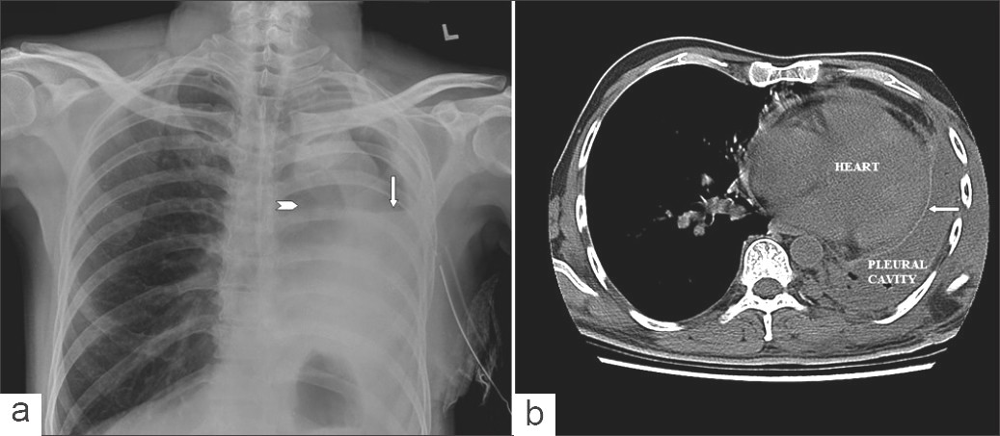

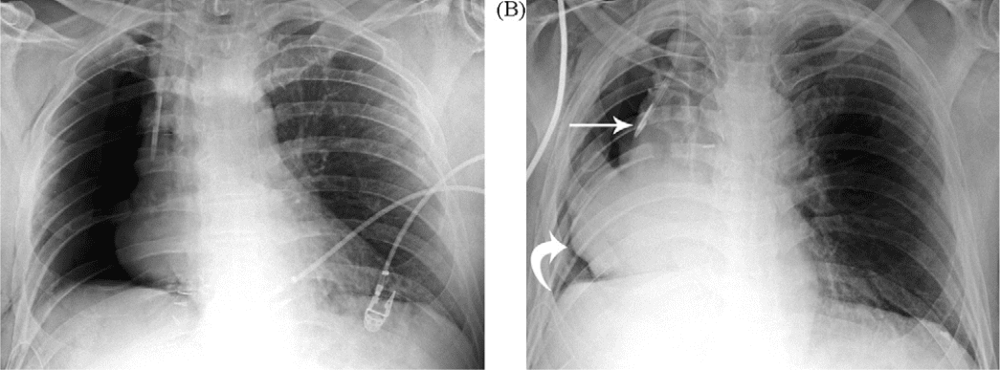
* Thoát vị phổi
– Thoát vị phổi qua trung thất sau cắt phổi (transmediastinal lung herniation) là tình trạng nhu mô phổi còn lại vượt qua đường giữa vào khoang bên đã cắt:
+ Mất thể tích sau cắt phổi, thay đổi chênh áp và giãn bù của phổi còn lại có thể làm nhu mô phổi lấn qua trung thất, thường ở phía trước; không quy hiện tượng này đơn thuần cho áp lực âm trong khoang mổ.
+ Thường không có triệu chứng và được phát hiện tình cờ. Thoát vị lớn hoặc tiến triển có thể gây chèn ép đường thở hay mạch máu trung thất, dẫn đến khó thở hoặc tức ngực; tổn thương nhu mô do chèn ép hiếm gặp.
– Đặc điểm hình ảnh:
+ X-quang ngực có thể thấy vùng nhu mô chứa khí vượt đường giữa vào khoang sau cắt phổi. Các vân mạch và phế quản trong vùng này giúp nhận diện đây là phổi, thay vì khí tự do trong khoang màng phổi.
+ MDCT ngực với tái tạo đa mặt phẳng giúp xác định sự liên tục của nhu mô, phế quản và mạch máu với phổi còn lại, đồng thời đánh giá chèn ép hoặc tổn thương nhu mô. Tiêm thuốc cản quang khi cần đánh giá mạch máu.
– Phân biệt:
+ Tràn khí màng phổi (pneumothorax): thường thấy đường màng phổi tạng và vùng ngoại vi không có vân mạch; thoát vị phổi vẫn có vân mạch, phế quản liên tục với phổi còn lại.
+ Bóng khí khổng lồ hoặc kén khí khổng lồ (giant bulla/giant pulmonary cyst): có thể tạo vùng thấu quang lớn nhưng thường có bờ thành riêng; MDCT giúp xác định vị trí trong nhu mô và phân biệt với phổi lấn qua trung thất.
– Theo dõi:
+ Có thể theo dõi người bệnh không triệu chứng, hình ảnh ổn định; không có khoảng thời gian chụp lại cố định cho mọi trường hợp. X-quang nối tiếp hoặc MDCT được lựa chọn theo triệu chứng, diễn tiến và mức độ bất thường.
+ Cân nhắc hội chẩn ngoại lồng ngực khi thoát vị lớn dần, gây triệu chứng hoặc có dấu hiệu chèn ép đường thở, mạch máu hay tổn thương nhu mô; chỉ định can thiệp cần cá thể hóa.

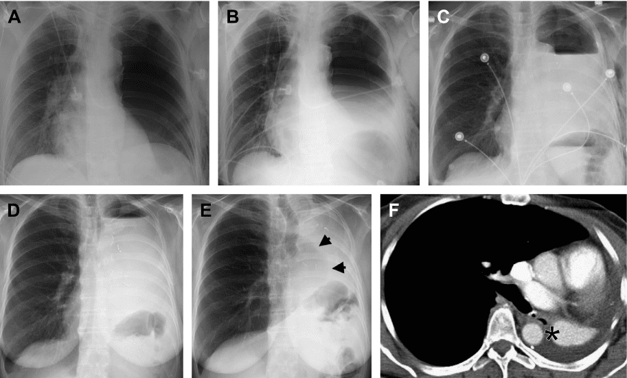
=> Case lâm sàng 1:


* Viêm phổi đối diện
– Viêm phổi đối diện sau cắt phổi (contralateral pneumonia after pneumonectomy) là nhiễm trùng nhu mô phổi còn lại:
+ Có thể xuất hiện sớm sau mổ. Cơ chế gồm hít sặc dịch tiết, máu hoặc dịch nhiễm trùng, giảm thanh thải đờm do đau và ho yếu; rò phế quản–màng phổi có thể tạo đường cho dịch từ khoang sau cắt phổi tràn vào phổi còn lại.
+ Sốt mới, đờm mủ, tăng bạch cầu và giảm oxy máu sau giai đoạn ổn định gợi ý nhiễm trùng; biểu hiện có thể không điển hình ở người cao tuổi hoặc suy kiệt.
– Đặc điểm hình ảnh:
+ X-quang ngực có thể thấy đám đông đặc mới, khu trú hoặc lan tỏa, đôi khi có phế quản hơi. MDCT có thể phát hiện đông đặc, kính mờ, nút nhầy hoặc nốt trung tâm tiểu thùy kiểu cây nảy chồi (tree-in-bud pattern); không dấu hiệu nào trong số này đặc hiệu cho viêm phổi.
+ Cấy đờm có thể giúp xác định tác nhân; cấy máu phù hợp khi nghi nhiễm khuẩn huyết. Nội soi phế quản và MDCT được cân nhắc khi cần đánh giá đường thở, lấy bệnh phẩm hoặc nghi có rò phế quản–màng phổi; cấy âm tính không loại trừ rò.
– Phân biệt:
+ Phù phổi sau cắt phổi (postpneumonectomy pulmonary edema) thường biểu hiện sớm bằng giảm oxy máu và mờ mô kẽ hoặc phế nang lan tỏa. Tuy nhiên, phù phổi cũng có thể chỉ xuất hiện ở phổi còn lại; cần đối chiếu thời điểm khởi phát, tình trạng dịch và chức năng tim, không dựa riêng vào tính khu trú hay lan tỏa.
+ Hội chứng suy hô hấp cấp (acute respiratory distress syndrome, ARDS) có thể gây giảm oxy máu nặng và đám mờ phế nang, chồng lấp với viêm phổi; sau cắt phổi, tổn thương chỉ thấy ở phổi còn lại nên kiểu phân bố trên phim không đủ để phân biệt.
+ Rò phế quản–màng phổi (bronchopleural fistula, BPF) có thể gây nhiễm trùng phổi còn lại do hít dịch từ khoang sau cắt phổi. Mức dịch hạ đột ngột hoặc khí xuất hiện trở lại trong khoang, rò khí qua dẫn lưu và hình ảnh thông thương trên MDCT gợi ý rò; nội soi phế quản giúp khảo sát mỏm phế quản.


=> Case lâm sàng 1:


Tài liệu tham khảo
* Radiographic and CT Findings of Thoracic Complications after Pneumonectomy – Eun Jin Chae, MD, Joon Beom Seo, MD
* Radiographic imaging features of thoracic complications after pneumonectomy in oncologic patients – K.L. Pool
* Imaging the post Thoracotomy patient Anatomic changes and Postoperative Complications – Jeffrey B. Alpert, MD
* Postoperative Imaging and Complications in Resection of Lung Cancer – Patricia M. de Groot, MD, Mylene T. Truong, MD, andMyrna C.B. Godoy, MD, PhD
* Cardiovascular Computed Tomography Findings after Pneumonectomy: Comparison to Lobectomy – Original InvestigationMaximilian Rauch, MD, Milka Marinova, MD, PhD, Hans Heinz Schild, MD, Holger Strunk, MD
* Radiographic and CT Findings in Complica- tions Following Pulmo- nary Resection – Eun A. Kim, MD, Kyung Soo Lee, MD, Young Mog Shim, MDJhingook Kim, MD, Kwanmien Kim, MD, Tae Sung Kim, MDPo Song Yang, MD
* Volume-expanding complications after pneumonectomy: comparison of CT findings – Du Hwan Choe
* Radiographic evaluation of the pleural fluid accumulation rate after pneumonectomy – Reginald F. Munden
* Imaging in postpneumonectomy complications: A pictorial review – S. H.Chandrashekhara,A. S. Bhalla,R. Sharma
* Complications secondary to pulmonary resection surgery: what the radiologist should know – I. Sánchez-Serrano, A. Navarro Baño, S. Ibáñez Caturla, L. GONZALEZ RAMOS, F. Sarabia Tirado, D. Rodríguez Sánchez; El Palmar, Murcia/ES
* Complications post thoracic surgery for Lung Cancer: Imaging Essentials – R. M. Heaney, C. reid, S. P. Doran, P. Beddy; Dublin/IE
* Imaging of postsurgical complications occurring after thoracic surgery: review of the main surgical procedures and early and late complications – G. Cicchetti